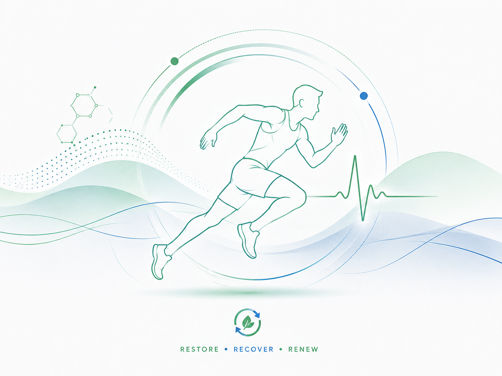
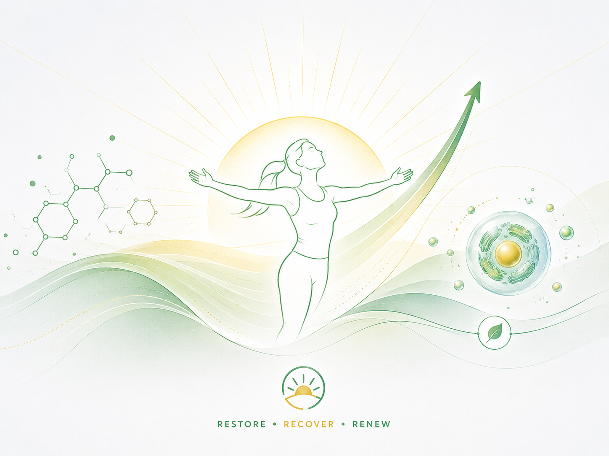
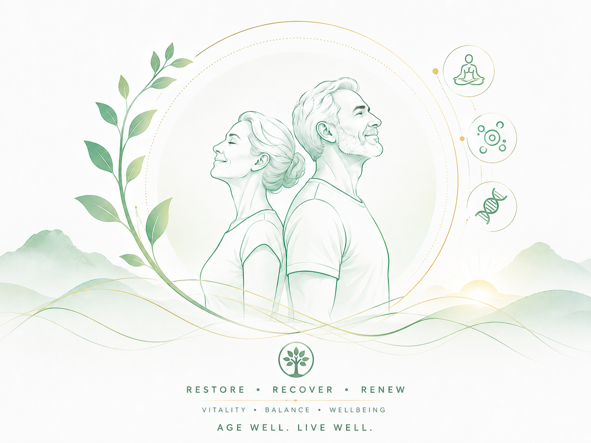

Benefits
Benefits of PEMF Therapy
How pulsed electromagnetic field therapy supports your wellness goals
Support Physical Recovery
PEMF therapy is used by athletes and wellness professionals to support the body's natural recovery processes. Whether after exercise, injury, or daily stress, PEMF may help support your body's repair mechanisms.
- Supports natural recovery processes
- Used by professional athletes worldwide
- Non-invasive and drug-free approach
- Complements active recovery routines
Click to learn more →

Promote Restorative Sleep
Quality sleep is foundational to wellness. PEMF therapy may help promote relaxation and support the body's natural sleep processes, helping you wake up feeling refreshed.
- Supports relaxation before bedtime
- May help improve sleep quality
- Non-habit forming approach
- Part of a healthy sleep routine
Click to learn more →
Natural Energy Support
Experience sustained vitality without stimulants. By supporting cellular energy production (ATP), PEMF therapy may help you maintain natural energy throughout the day.
- Supports cellular ATP production
- No stimulant effects or crashes
- Sustained, natural energy
- Complements healthy lifestyle
Click to learn more →

Daily Wellness Support
PEMF therapy is a wellness tool that complements healthy habits. It's designed to support your body's natural balance as part of a holistic approach to health.
- Supports overall wellness routine
- Non-invasive and easy to use
- Simple to incorporate daily
- Part of a holistic health approach
Click to learn more →

Experience the Benefits
Book a free consultation to learn how PEMF therapy can support your wellness goals.